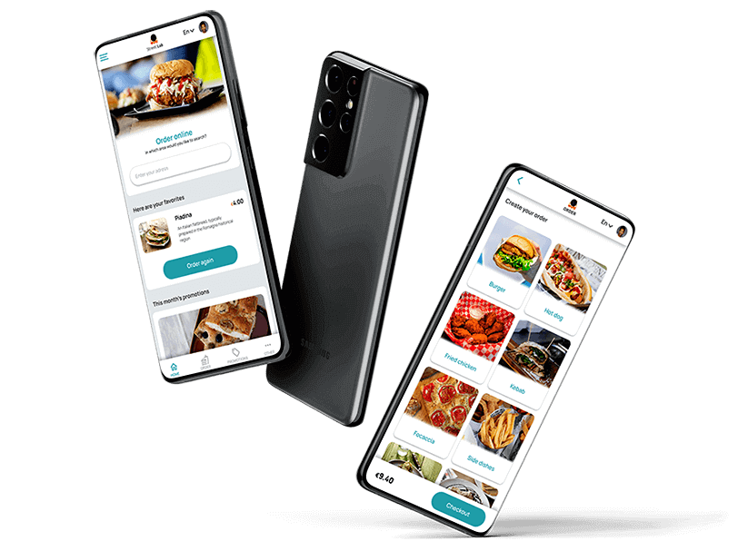

Street Lab
Creating an app for a fictitious street food chain.
Improving the user experience by allowing you to order quickly and comfortably.
Try the prototype and let me know what you think!
Try the appThe project
My role:
I independently took care of all the steps necessary to carry out the project, from start to finish.
Duration:
From May 1th to June 20th, 2021.
What we have to know
Point #1
Users want to order in advance and pick up their food at the indicated time.
Point #2
Users want to know in advance if a certain menu is not available.
Point #3
Users want to be able to use their native language.
Point #4
Users want to be able to use their native language.
Point #5
User want to choose the ingredients.
The data
I analyzed: the company's target, the website on mobile and desktop, the features, accessibility, user flow, navigation, graphic elements, corporate tone and contents, strengths points and weak points.
What i found
The target was heterogeneous, the website was usually totally responsive, the tone was accessible, friendly and informal. The features, the user flow, the graphic elements and the analysis of the strengths were used to design the following steps.
Thinking about the users
Example: Abeeku Kantao user journey
Actions
Task
Feelings
Find a restaurant
Find a restaurant with fresh food and fast delivery
Neutral, hungry and probably in a hurry
Choose what to order
Find a menu, read all the possibility
Worried about his difficulty with the language
Place the order
Wait in line for his turn, communicate his choice at the counter
Worried about taking too long, anxious about having to communicate
Wait for the order to be ready
Wait for the order to be prepared, hoping it won’t take long
Anxious, in a hurry, hopeful
Collect the order
Collect the order and walk towards the train
Happy to be on time, frustrated that he couldn’t check the ingredients
Let's assume that Abeeku saw the app a few days earlier in an online advertisement, how would his path change?
Actions
App help
Feelings
Find a restaurant
The app searches and finds restaurants in the chosen location
Neutral, relaxed
Choose what to order
The app shows the menu and all the ingredients
Intrigued, relaxed, hungry
Place the order
The app allows you to choose the pick-up time, supports multiple languages
Relaxed, happy
Wait for the order to be ready
The app confirms the order and will remind us to go and get it
Neutral, relaxed, confident
Collect the order
Collect the order and walk towards the train
Happy, relaxed, satisfied
Thanks to the app, Abeeku would certainly be more satisfied and willing to use it again in the future.
Let's start creating
Paper wireframes
First I created some paper wireframes as they are easier and faster to produce and modify.
Digital wireframes and Prototyping
Later I created some digital wireframes and a prototype.
Objective
The aim of the study was to understand if users were actually able to conclude an order. I also wanted to know how fluently the participants interacted with the prototype, see if they could discover all the features of the app included, test the layout and find any unknown errors.
Key performance indicator
the values that were taken into consideration were:
#1 Time on task
#2 User error rates
#3 Conversion rates
#4 Net promoter score
#5 System usability scale
What i found out
From the usability tests I received some feedback, the most frequent ones were:
#1
Users wanted shortcuts to be able to perform repetitive actions, such as ordering the same food.
#2
Some buttons were difficult to reach with a standard mobile phone grip.
#3
Some processes, such as selecting a time, were unnecessarily complex.
#4
Some buttons were too small and needed to be enlarged.
#5
Payment methods were limited
Conclusion
What I learned:
Through the whole project, I was able to gain insights into ordering processes, optimal button layout and size, and iterative processes.